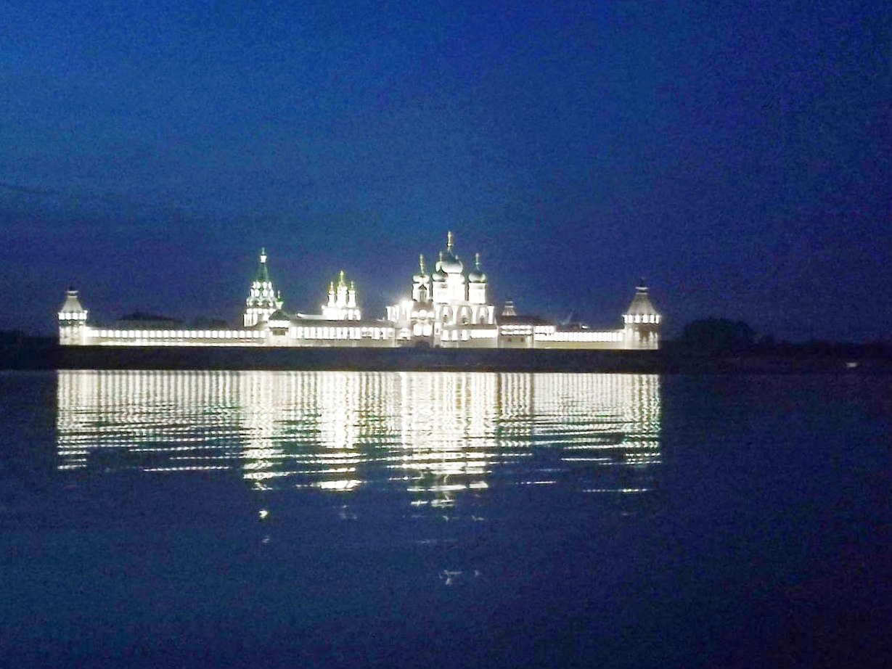
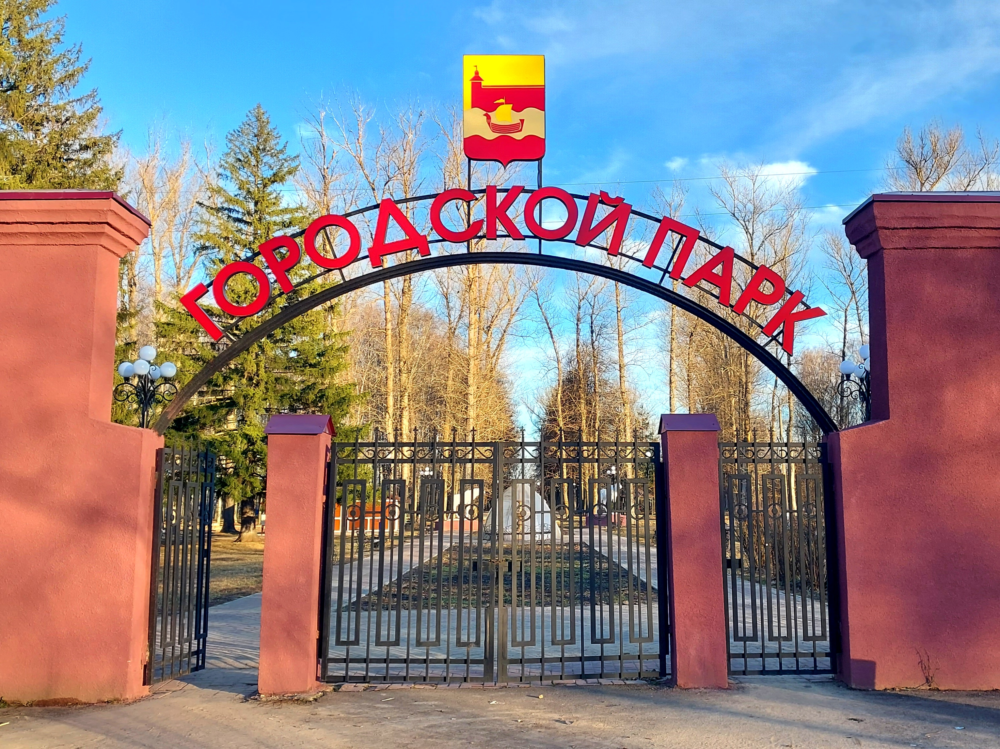
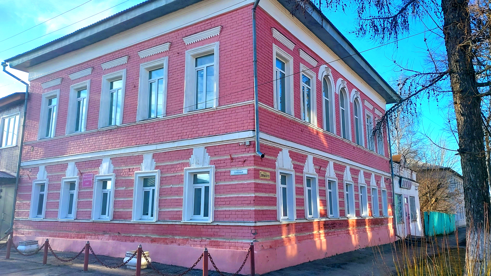
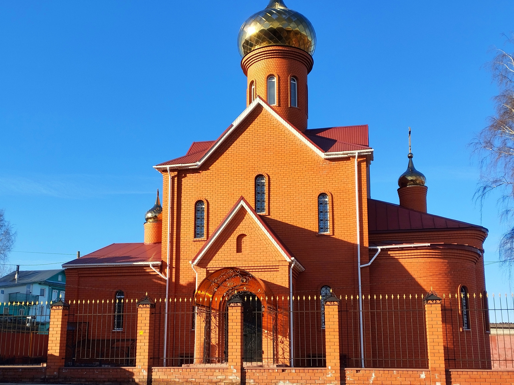
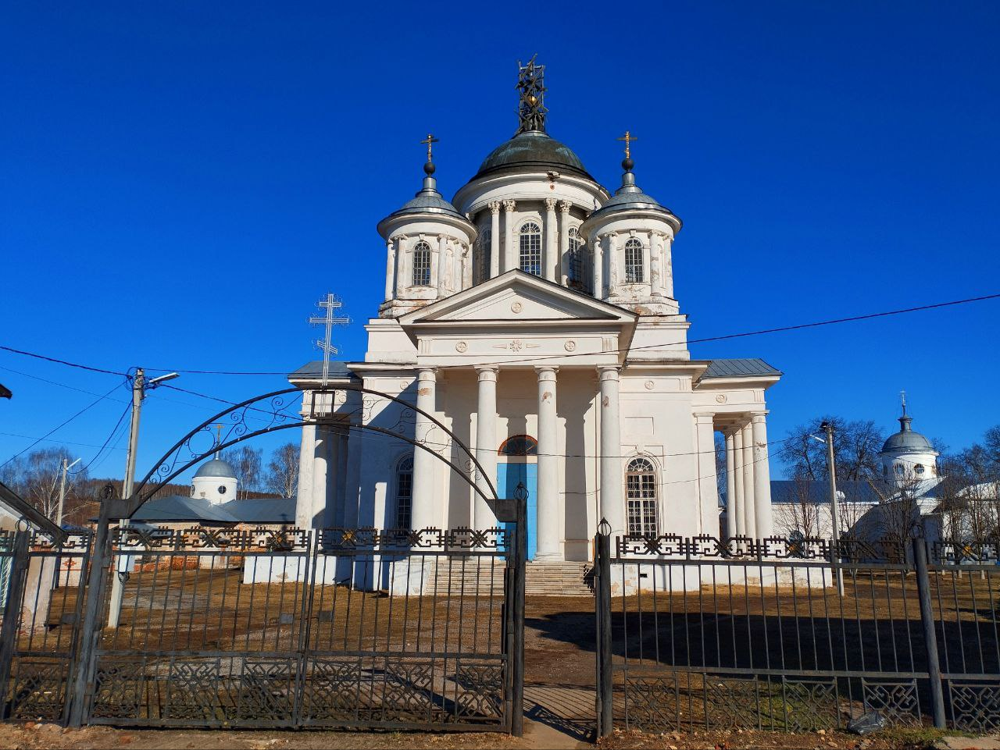
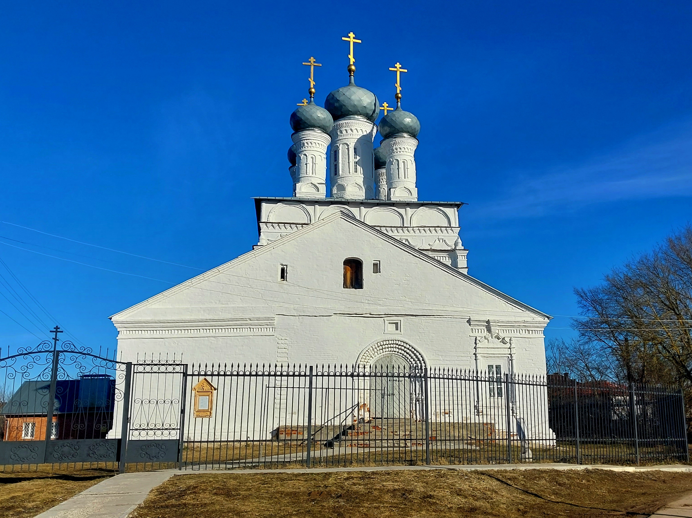
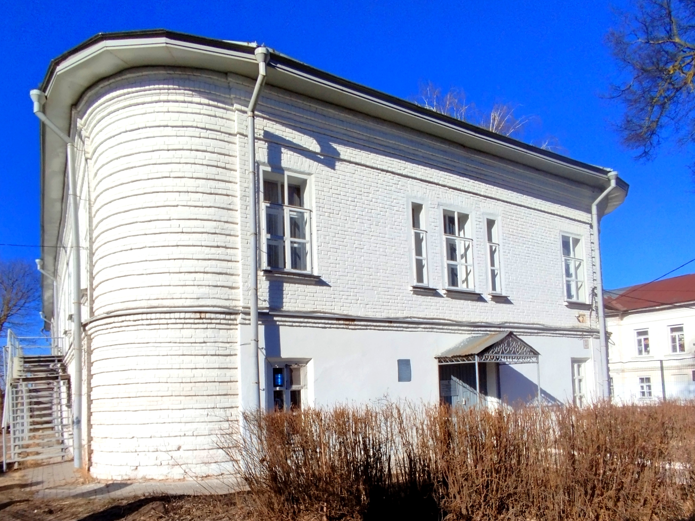

Добро пожаловать!
Лысково – живописный город Нижегородской области с богатой историей и культурой.
Основные достопримечательности:
 |
Пивоваренный завод купцов Ермолаевых был известен на всю Россию качественным пивом и напитками. Он был основан в 1860 году. Завод Ермолаевых за свою продукцию на различных конкурсах и выставках получал золотые и серебряные медали. И в 2013 предприятие на подъеме на одном из конкурсов в Сочи завод получил 4 медали. Когда Ермолаевы построили в Нижнем Новгороде еще один пивоваренный завод, то он сначала носил название Ново-Лысковский. Пивоваренный завод — это один из старейших и наиболее известных предприятий региона. Современный пивоваренный завод в Лысково оснащен передовым оборудованием, позволяющим производить высококачественное пиво и напитки. Предприятие славится своими традиционными сортами пива, которые пользуются популярностью не только в регионе, но и за его пределами. Пивоваренный завод в Лысково — это символ стабильности и качества, а также важный элемент промышленного наследия региона. |
|  | Макарьевский монастырь является ценным историко-архитектурным памятником древности. Первое летописное упоминание о нем относится к 1435 году, когда монах Нижегородско-Печерского монастыря Макарий, будучи уже в преклонном возрасте, явился с группою своих сподвижников на левое побережье Волги. Наибольший интерес представляет кремль. Это высокое, четырехугольная каменная ограда вокруг всего монастыря, имеющая общую длину стен свыше 1050 метров. На территории монастыря из крупных сооружений следует отметить Успенскую двухэтажную каменную церковь, построенную в 1651 году вместе с колокольней. Интересным по архитектуре является большой Троицкий собор, построенный на месте деревянной крепости в 1658 году. Сегодня монастырь открыт для всех желающих прикоснуться к духовной культуре России. Этот духовный центр стал символом веры, стойкости и духовного просветления. |
 |
Мемориал погибшим воинам был открыт 12 сентября 1965 года, а Вечный огонь зажжен 9 мая 1972 года. А в 2015 году к 70-летию победы в Великой Отечественной войны было решено сделать настоящий парк Победы. Основной целью было создание места, которое бы символизировало мирную жизнь, достигнутую благодаря самоотверженным усилиям солдат и офицеров Красной Армии. Центральной частью парка стал мемориальный комплекс, возведенным в честь героев Великой Отечественной войны. Открытие памятников стало важным событием для всего города. Со временем парк развивался и модернизировался, были установлены многие элементы благоустройства, однако главное предназначение парка – сохранение памяти о прошлом – оставалось неизменным. Сегодня Парк Победы продолжает оставаться значимым культурным и историческим объектом города Лысково. |
|  | История парка берет свое начало еще в советское время, когда местные власти начали благоустраивать территорию для нужд горожан. За прошедшие десятилетия парк претерпел несколько этапов реконструкции, однако его основной облик остается прежним – сочетание зеленых насаждение и зон для отдыха. Одной из главных достопримечательностей парка является большое фонтан, расположенный в центральной части. Рядом с фонтаном находятся удобные лавочки, где можно посидеть и полюбоваться оригинальным пейзажем. Также в парке есть детская площадка, что делает парк особенно популярным среди детей. Для любителей спорта предусмотрены специальная зона для занятия физкультурой. Кроме того, в парке часто проводятся различные массовые мероприятия. Таким образом, городской парк Лысково является неотъемлемой частью городского ландшафта. |
|  | Музей был основан в 1918 году. Экспозиция музея включает в себя разнообразные коллекции, отражающие историю Лысковского района с древнейших времен до современности. Среди экспонатов можно найти археологические находки, предметы быта крестьян и ремесленников, документы и фотографии, рассказывающие о жизни местных жителей в разные эпохи. Особое внимание уделяется тематике Великой Отечественной войны, ведь Лысковский район внес значительный вклад в Победу. В музее представлены материалы о боевых действиях, проходивших на территории района, а также личные вещи ветеранов и письма с фронта. Кроме постоянной экспозиции, музей регулярно проводит временные выставки, посвященные различным аспектам местной истории и культуры. Здесь также организуются лекции, мастер-классы и другие образовательные мероприятия для школьников и взрослых. |
|  | В Лысково с XIX века традиционно существовала община старообрядцев. В конце XX века началась её возрождение, и возникла необходимость строительства церковного здания. Новую церковь возводили с 1999 по 2013 годы на пожертвования прихожан. Сейчас она является действующим храмом Русской православной старообрядческой церкви. Здание выполнено из красного кирпича в традиционном стиле, украшено золотистым куполом с крестом. Крыша имеет скаты, окна продолговатые. Интерьер заполнен иконами. Территорию окружает металлический забор с краснокирпичными столбиками. У храма сформировался постоянный приход. Богослужения проводятся по воскресеньям и праздникам. |
|  | Cобор Вознесения Господня был построен в 1814-1838 годах как летний храм на средства князя Г. А. Грузинского. Вознесенская церковь и сейчас доминирует над окружающей городской застройкой, а ансамбль до сих пор играет организующую роль для старой части Лыскова. Высокий барабан центральной главы церкви окружен поясом спаренных коринфских колонн и завершен куполом. Вокруг четырех малых глав поставлены ионические колонны. С трех ее сторон устроены четырехколонные портики римско-дорического ордера под фронтонами. Алтарь имеет подобную им форму, но колонны только обозначены. Все четыре корпуса, окружающие Вознесенскую церковь, имели над углами круглые башенки, завершенные куполами. Фасады этих зданий обработаны рустом. Сегодня Церковь Вознесения Господня продолжает функционировать как действующий храм, где регулярно проходят богослужения и различные религиозные мероприятия. |
|  | Спасо-Преображенский собор в Лыскове был построен в 1711 году при грузинском царе Арчиле Вахтанговиче и его сыне Александре Арчиловиче Имеретинских. Спасо-Преображенский собор в Лысково стоит на Красной Горке, где раньше находилась деревянная Спасская церковь. В 2011 году отмечали его 300-летие, ведь новый храм возвели в 1711 году. Фасад собора остался неизменным, но вся наружная отделка была утрачена. Более 59 лет здесь хранился Крест святой равноапостольной Нины, сделанный из виноградной лозы. В 1990 году собор передали Макарьевскому монастырю. На сегодняшний день Церковь Преображения Господня остаётся действующей и принимает верующих на регулярные богослужения. |
|  | Усадьба князей Грузинских-Стоговых была основана в начале XIX века. Усадьба представляет собой прекрасный образец русского классицизма, сочетающий в себе элементы европейской архитектуры и местного колорита. История усадьбы тесно связана с именем самого князя. После переезда на службу в Российскую империю, он получил в свое владение село Лысково и начал активно развивать его. Именно благодаря его усилиям были построены многие здания, включая Спасо-Преображенский собор, где впоследствии и был похоронен сам князь. Сегодня усадьба является объектом культурного наследия федерального значения и привлекает внимание туристов своей историей и красотой. Регулярно проводятся экскурсии, позволяющие ближе познакомиться с жизнью княжеской семьи и узнать больше о роли усадьбы в истории региона. |
 |
Магазин купца Ивана Фёдоровича Писарева был построен в начале XX века. Купец Григорий Степанович Писарев был известным предпринимателем и благотворителем в городе Лысково Нижегородской губернии (ныне Нижегородская область). Его магазин находился на центральной улице города и играл важную роль в экономической и социальной жизни местного сообщества. Магазин Писарева предлагал широкий ассортимент товаров, включая продукты питания, ткани, одежду, обувь и другие бытовые товары. Это было одно из крупнейших торговых заведений в Лыскове, привлекавшее покупателей не только из самого города, но и из окрестных деревень. |